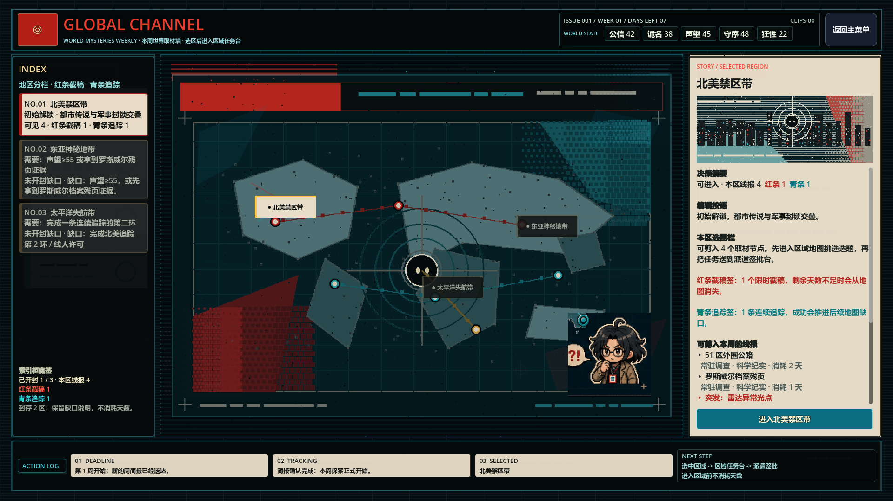
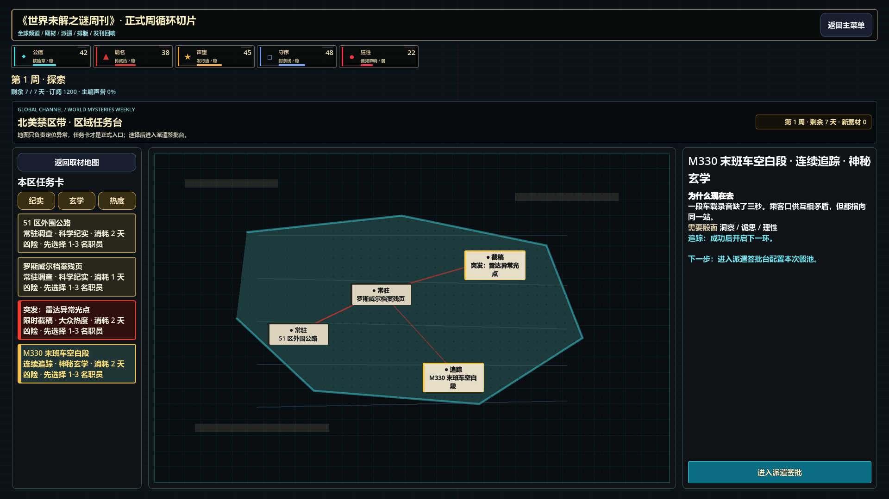
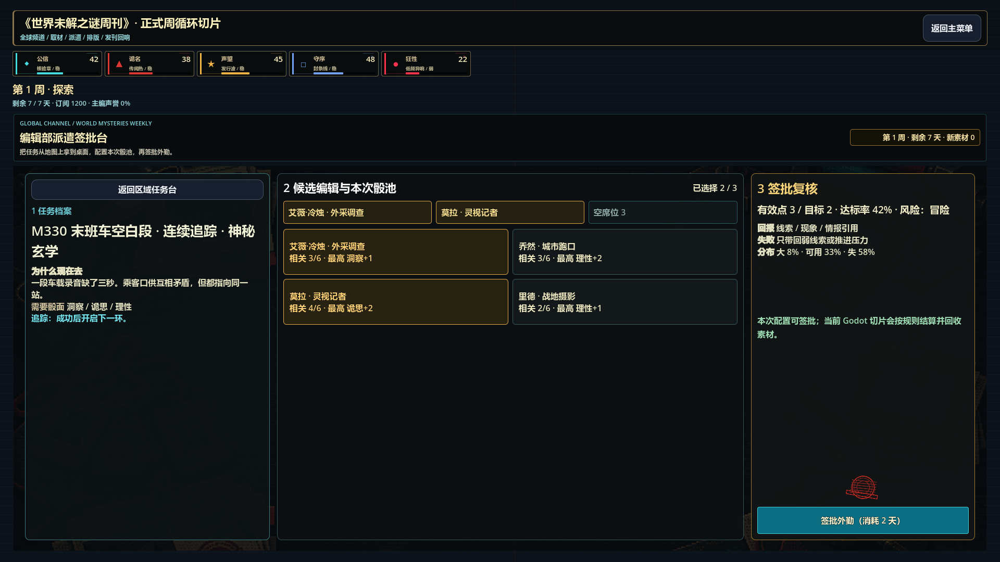
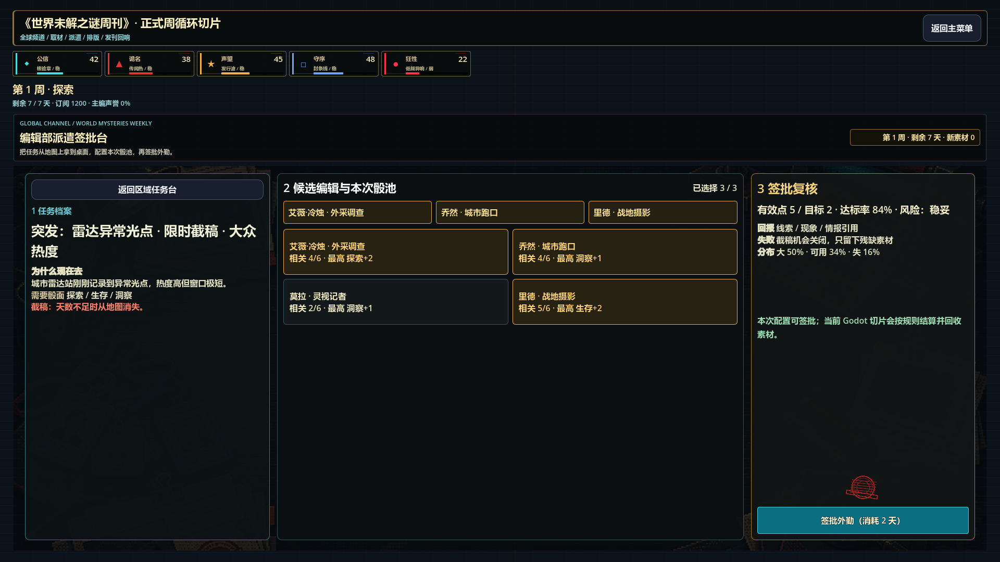

01 · 全球频道世界地图
中央地图改为低细节像素地图板；左侧地区索引改为红 / 青分栏卡；右侧选题夹改为浅色杂志模块；底部补行动日志与流程证明。

中央地图改为低细节像素地图板；左侧地区索引改为红 / 青分栏卡；右侧选题夹改为浅色杂志模块；底部补行动日志与流程证明。

检查世界层落地没有破坏进入区域后的任务台结构，地图、任务列表和进入派遣签批 CTA 保持可用。

检查下游派遣页仍可配置候选编辑、本次骰池、签批复核和执行按钮。

检查红条截稿任务进入派遣后仍保持任务类型、风险、成功率和消耗天数反馈。
